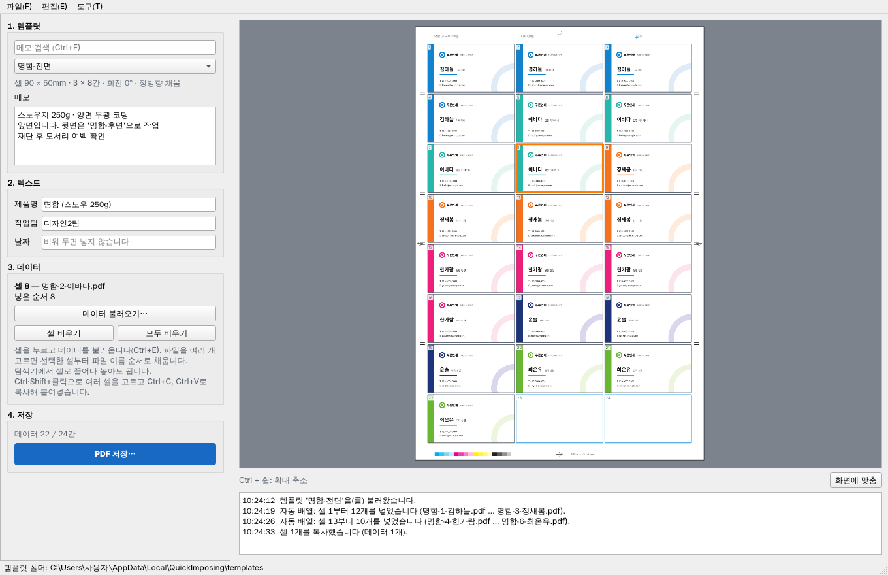

Windows 10, 11 · CMYK 인쇄용
카드 PDF를
판에 바로 앉힙니다
명함 같은 카드 PDF를 인쇄용 판 PDF의 정해진 칸에 배치하는 프로그램입니다. 판 구조를 템플릿으로 한 번 만들어 두면, 작업할 때는 템플릿을 골라 카드를 넣고 저장하면 됩니다.
최신판 내려받기
zip · 설치 없이 압축만 풀면 됩니다

쓰는 순서
처음 한 번 템플릿 편집기
-
베이스 PDF
재단선과 마크만 있는 판의 바탕. 인쇄할 판 크기 그대로입니다.
-
칸과 글자 자리 정하기
셀 크기, 칸 수, 간격, 회전, 판에 넣을 글자 자리를 정합니다.
-
명함-전면
템플릿 저장
새 사양이 생겼을 때 한 번 만들어 두고 계속 씁니다.
매 작업 작업 프로그램
-
카드 PDF
명함처럼 같은 크기의 카드 PDF를 여러 장 준비합니다.
-
칸에 카드 넣기
한 칸씩 넣거나 이름 순서대로 한 번에 채웁니다. 날짜 같은 글자도 입력합니다.
-
PDF
판 PDF 저장
인쇄소에 넘길 판 PDF가 나옵니다. 다시 열어 고칠 수 있게 프로젝트 파일도 같이 남습니다.
- 1zip 파일의 압축을 풉니다.
- 2나온
QuickImposing폴더를 원하는 곳(예:C:\QuickImposing)에 통째로 둡니다. - 3
QuickImposing.exe를 실행합니다.
패치 소식
전체 기록 →아직 공개된 버전이 없습니다. 첫 버전이 나오면 여기에 바뀐 점을 알려 드립니다.